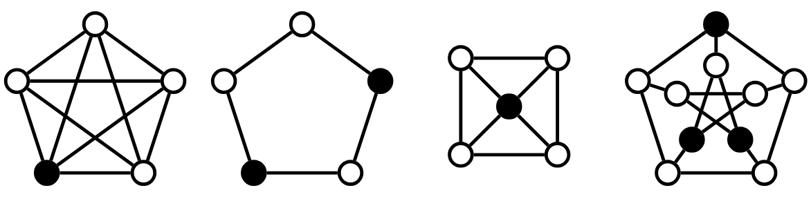

01/01/2025 – Presente
A Teoria dos Grafos estuda relações entre objetos, onde um grafo é usualmente representado por $G = (V, E)$, onde $V$ é um conjunto de vértices, e $E$ um conjunto de arestas.
Um Conjunto Dominante é um subconjunto de vértices $D \subset V$ tal que todo vértice fora de $D$ é adjacente a pelo menos um vértice de $D$. Um Conjunto Dominante Mínimo é aquele de menor cardinalidade.
Abaixo vemos exemplos de grafos em que os vértices pintados de preto constituem conjuntos dominantes mínimos.

Clique nos vértices para montar seu candidato a CDM.
Este trabalho é resultado dos estudos feitos durante iniciação científica com bolsa CNPq, sob orientação da prof. Márcia Rosana Cerioli.
Abordamos principalmente relações entre os elementos de CDMs simples e duplos, cotas superiores para esses parâmetros de dominação, com foco nas classes de outerplanares maximais e árvores. Também estudamos conexões da teoria de dominação com a teoria de emparelhamentos.